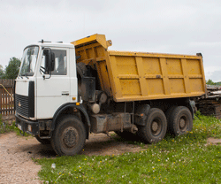
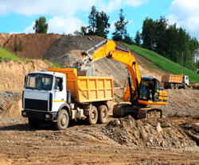
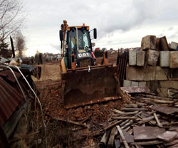

Аренда спецтехники
У вас появилась необходимость в землеройных машинах или нуждаетесь в погрузке больших объемов? Вам помогут экскаватор CAT, экскаватор-погрузчик CAT 428F и Komatsu WB97S-5. Обращайтесь к нам и мы проконсультируем по всем вопросам.
Аренда самосвала
Самосвал МАЗ-5516 20 тонн отлично подойтет для выполнения перевозок строительного мусора, песка и гравия. Звоните нам, если у вас появилась необходимость арендовать спецтехнику по доступным ценам!


